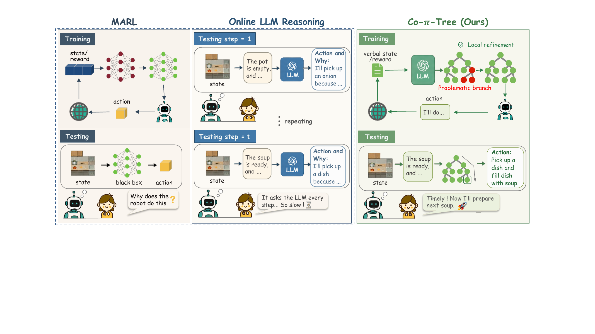

Co-π-tree
Distilling LLM reasoning into executable policy trees for human-AI collaboration.
School of Computer Science and Engineering
Research Areas: Multi-Agent Systems, Ad Hoc Teamwork, Human-AI Collaboration, Interpretable Decision-Making, Large Language Models
[2026.08] Our Co-π-tree paper was accepted to Findings of EMNLP 2026.
[2026.08] An updated version of PACT is available on arXiv.
I am a Master's student in Computer Technology at Sun Yat-sen University. I received my B.Eng. in Computer Science and Technology from  Central South University in 2025.
Central South University in 2025.
My research focuses on how agents collaborate with unfamiliar teammates and people. I study ad hoc teamwork, multi-agent learning, and interpretable policies that turn language-model reasoning into efficient decisions.

Distilling LLM reasoning into executable policy trees for human-AI collaboration.

Learning team representations to collaborate with unfamiliar teammate groups that have different coordination styles.